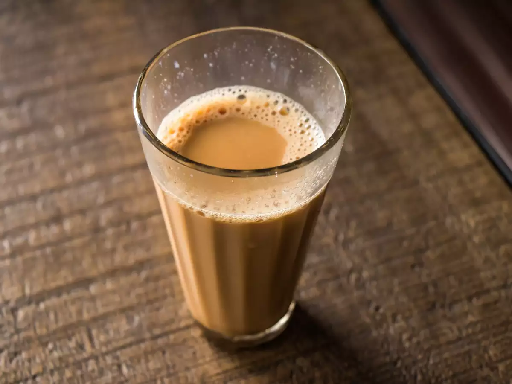
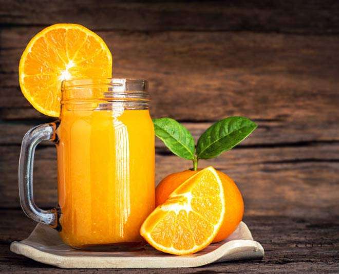

Black Tea
Ingredients:
- 1 cup of water
- 1 teaspoon of loose black tea leaves (or 1 black tea bag)
- Sugar or honey (optional, to taste)
- Lemon slice (optional, for flavor)
Instructions:
- Start by boiling 1 cup of water in a kettle or small pot.
- Once the water reaches a rolling boil, turn off the heat and add 1
teaspoon of black tea leaves or place a black tea bag in your cup.
- Let the tea steep for 3-5 minutes, depending on how strong you like it.
The longer you steep, the stronger the tea will be.
- If you like your tea sweet, add sugar or honey to taste while the tea is
still hot. Stir well to dissolve.
- For a refreshing twist, add a slice of lemon to the tea.
This also adds a slight tanginess.(Optional)
- Pour the tea into your cup if you used loose tea leaves and strained it.
If you used a tea bag, simply remove it after steeping.
Coffee
Ingredients:
- 1 cup of water
- 1-2 teaspoons of coffee powder
(instant coffee or ground coffee)
- 1/2 to 1 cup of milk (optional,
depending on your preference)
- 1-2 teaspoons of sugar (optional, to taste)
Instructions:
- Start by boiling 1 cup of water in a kettle or small pot.
- Once the water boils, turn off the heat. Add 1-2 teaspoons of coffee powder to
your cup, depending on how strong you like your coffee.
- Add sugar to taste and stir well to dissolve.
- If you prefer black coffee, skip this step. For a milder, creamy coffee, add 1/2
to 1 cup of hot milk. You can adjust the milk quantity based on how
strong or light you like your coffee.
- Stir well to combine all the ingredients. Serve hot.

Tea
Ingredients:
- 1 cup of water
- 1 teaspoon of black tea leaves
(or 1 black tea bag)
- 1/2 cup of milk (any type: whole, skimmed, or plant-based)
- 1-2 teaspoons of sugar (optional, to taste)
- A pinch of cardamom or a small piece of
ginger (optional, for extra flavor)
Instructions:
- Start by boiling 1 cup of water in a kettle or small pot.
- Once the water is boiling, add 1 teaspoon of black tea leaves or a tea bag.
Allow it to boil for 1-2 minutes to release the flavor.
- Pour in 1/2 cup of milk. Stir the mixture and bring it back to a boil.
- Add 1-2 teaspoons of sugar to taste.
Stir well to ensure the sugar dissolves completely.
- Reduce the heat and let the tea simmer for 2-3 minutes.
If you prefer a stronger tea, you can let it simmer a little longer.
- For a spiced tea, you can add a pinch of cardamom or a
small piece of ginger while the tea is simmering. (Optional)
- Strain the tea into a cup to remove the tea leaves
(or remove the tea bag). Serve hot.
Watermelon Juice
Ingredients:
- 2 cups of watermelon (deseeded and cubed)
- A pinch of salt
- A squeeze of lemon juice (optional)
Instructions:
- Blend the watermelon cubes in a blender until smooth.
- Strain the juice if you prefer it without pulp.
- Add a pinch of salt and a squeeze of lemon juice for extra flavor.
- Serve chilled.

Orange Juice
Ingredients:
- 4-5 fresh oranges
- Sugar or honey (optional)
- Ice cubes (optional)
Instructions:
- Cut the oranges in half and squeeze the juice using
a hand juicer or an electric juicer.
- Strain the juice to remove any pulp or seeds, if desired.
- Add sugar or honey if you like it sweeter.
- Serve chilled with ice cubes.
Carrot Juice
Ingredients:
- 4-5 medium-sized carrots
- 1 apple (optional, for sweetness)
- 1 inch of ginger (optional, for a kick)
- Lemon juice to taste
Instructions:
- Peel and chop the carrots and apple (if using).
- Blend the carrots, apple, and ginger in a blender until smooth.
- Strain the juice if needed.
- Add lemon juice to taste and stir well.
- Serve immediately.
Pineapple Juice
Ingredients:
- 1 ripe pineapple (peeled and chopped)
- 1-2 teaspoons of sugar or honey (optional)
- A few mint leaves (optional)
Instructions:
- Blend the pineapple chunks in a blender until smooth.
- Strain the juice to remove the pulp if you prefer a
smoother texture.
- Add sugar or honey if you want it sweeter.
- Garnish with mint leaves and serve chilled.
Mixed Fruit Juice
Ingredients:
- 1 apple, chopped
- 1 orange, peeled
- 1 banana
- 1/2 cup pineapple chunks
- 1/2 cup water or coconut water
Instructions:
- Blend all the fruits together with water or
coconut water until smooth.
- Strain if you prefer a smoother juice.
- Serve immediately, chilled or over ice.
Lemonade
Ingredients:
- 2 lemons
- 2 tablespoons of sugar or honey
- 2 cups of cold water
- Ice cubes
- Mint leaves (optional)
Instructions:
- Squeeze the juice from the lemons and pour it into a jug.
- Add the sugar or honey and stir until dissolved.
- Add cold water and mix well.
- Serve over ice with a few mint leaves for garnish.